लोकतंत्र की यात्रा में राजनीतिक दल सबसे अधिक दृश्यमान संस्था हैं। आम नागरिकों के लिए लोकतंत्र का अर्थ ही राजनीतिक दल होता है। यदि आप दूरदराज के ग्रामीण इलाकों में जाएं तो संभव है कि लोगों को संविधान या सरकार की संरचना के बारे में जानकारी न हो, परंतु उन्हें प्रमुख राजनीतिक दलों और उनके नेताओं के नाम अवश्य मालूम होते हैं।

राजनीतिक दल किसे कहते हैं? राजनीतिक दल ऐसे लोगों का एक संगठित समूह है जो चुनाव लड़ने और सरकार में राजनीतिक सत्ता हासिल करने के उद्देश्य से एक साथ काम करते हैं। ये समाज के सामूहिक हित को ध्यान में रखकर कुछ नीतियां और कार्यक्रम तय करते हैं।
किसी भी राजनीतिक दल के निम्नलिखित तीन मुख्य हिस्से होते हैं:
- 1. नेता: जो दल का नेतृत्व करते हैं, नीतियां बनाते हैं और चुनाव जीतकर सरकार में मंत्री या प्रमुख पद संभालते हैं।
- 2. सक्रिय सदस्य: जो पार्टी के कार्यक्रमों, बैठकों और चुनावी अभियानों को धरातल पर संचालित करते हैं।
- 3. अनुयायी या समर्थक: जो दल की विचारधारा में विश्वास रखते हैं और चुनाव के समय वोट देकर दल को विजयी बनाते हैं।

राजनीतिक दल लोकतंत्र में अनेक महत्वपूर्ण भूमिकाएं निभाते हैं। इनके 7 प्रमुख कार्य निम्नलिखित हैं:
🗳️ कार्य 1: चुनाव लड़ना
अधिकतर लोकतांत्रिक देशों में चुनाव मुख्य रूप से राजनीतिक दलों द्वारा खड़े किए गए उम्मीदवारों के बीच लड़ा जाता है। भारत जैसे देश में पार्टी के शीर्ष नेता ही चुनाव हेतु उम्मीदवारों का चयन करते हैं, जबकि अमेरिका में दल के सदस्य और समर्थक उम्मीदवार चुनते हैं।

📋 कार्य 2: नीतियां और कार्यक्रम तय करना
दल विभिन्न नीतियों और कार्यक्रमों को जनता के सामने रखते हैं और मतदाता अपनी पसंद की नीतियों का चुनाव करते हैं। देश के पास ढेरों विचार होते हैं, परंतु राजनीतिक दल उन विचारों को कुछ बुनियादी दिशाओं में समेट देते हैं जिन्हें सरकार लागू कर सकती है।
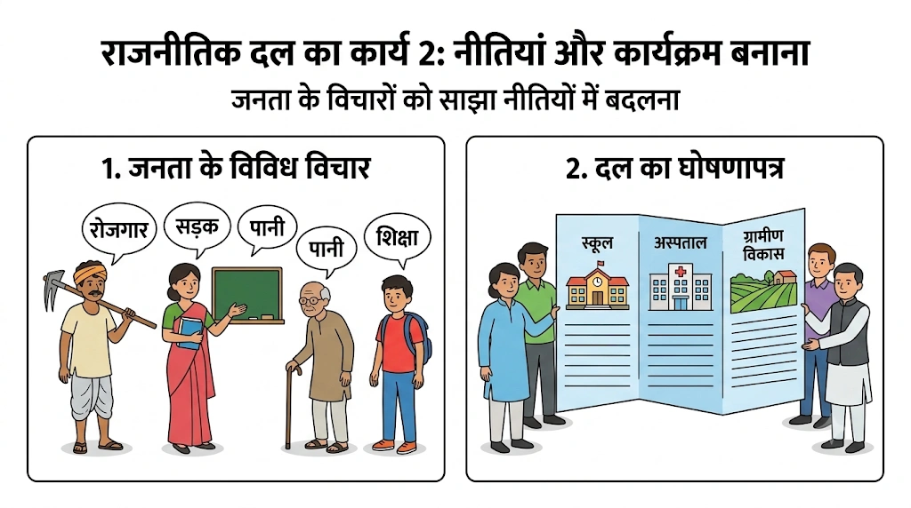
⚖️ कार्य 3: कानून निर्माण में निर्णायक भूमिका
देश के लिए कानून बनाने में राजनीतिक दल महत्वपूर्ण भूमिका निभाते हैं। विधायिका (संसद/विधानसभा) में औपचारिक बहस के बाद कानून पास होते हैं। चूंकि विधायक और सांसद किसी न किसी दल के सदस्य होते हैं, इसलिए वे अपने दल के निर्देश (व्हिप) के अनुसार ही विधेयक पर मतदान करते हैं।
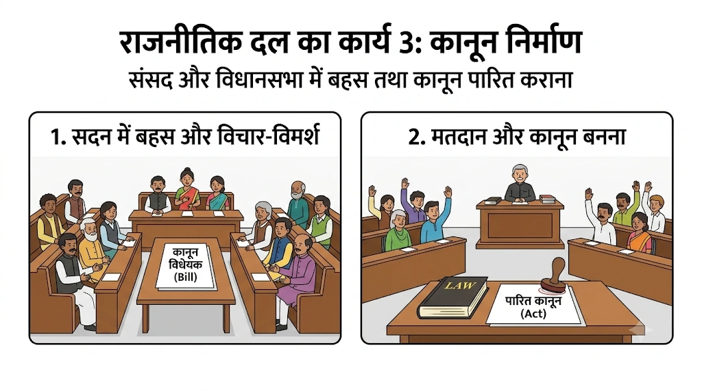
🏛️ कार्य 4: सरकार बनाना और चलाना
कार्यपालिका का गठन राजनीतिक दलों द्वारा ही किया जाता है। चुनाव जीतने वाला दल सरकार बनाता है। नेताओं को प्रशिक्षित किया जाता है और फिर उन्हें मंत्री बनाकर सरकारी मंत्रालयों (गृह, वित्त, शिक्षा, रक्षा आदि) को चलाने की जिम्मेदारी सौंपी जाती है।
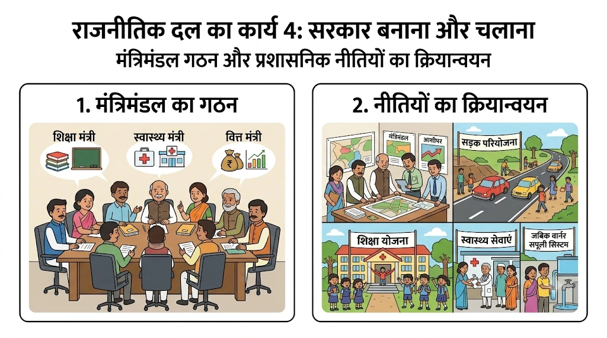
📢 कार्य 5: विपक्ष की भूमिका
चुनाव में हारने वाले दल सत्ताधारी दल के खिलाफ 'विपक्ष' की भूमिका निभाते हैं। वे सरकार की गलत नीतियों और असफलताओं की आलोचना करते हैं, संसद में सवाल पूछते हैं तथा जनता को जागरूक कर सरकार पर अंकुश लगाते हैं।
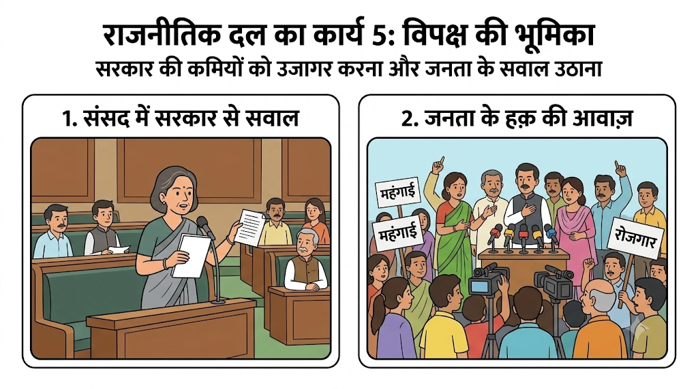
👥 कार्य 6: जनमत का निर्माण
राजनीतिक दल मुद्दों को उठाते हैं और उन पर बहस कराते हैं। देश भर में दलों के लाखों कार्यकर्ता फैले होते हैं जो समाज के विभिन्न वर्गों के मुद्दों पर जनमत तैयार करते हैं और रैलियां व सभाएं आयोजित करते हैं।
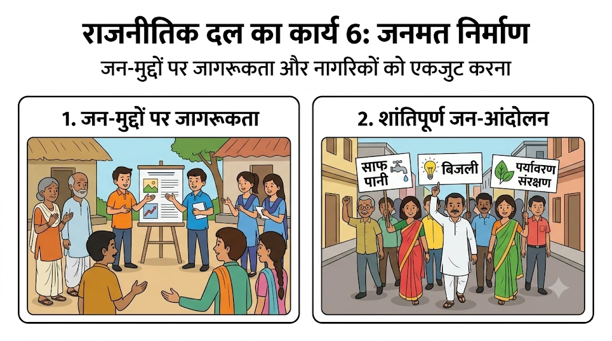
🤝 कार्य 7: कल्याणकारी योजनाओं तक पहुँच
दल आम नागरिकों को सरकारी तंत्र और कल्याणकारी योजनाओं (जैसे- आवास योजना, राशन, पेंशन आदि) तक पहुँच प्रदान करते हैं। आम नागरिक के लिए किसी सरकारी अफ़सर की तुलना में स्थानीय पार्टी कार्यकर्ता से संपर्क साधना अधिक आसान होता है।
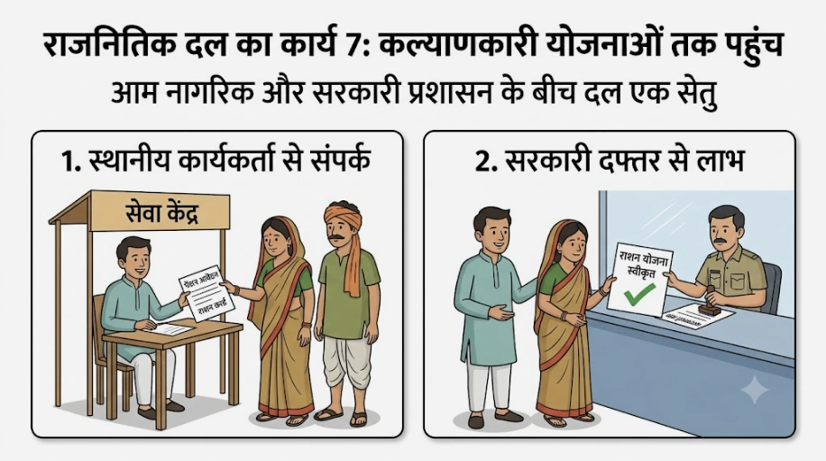
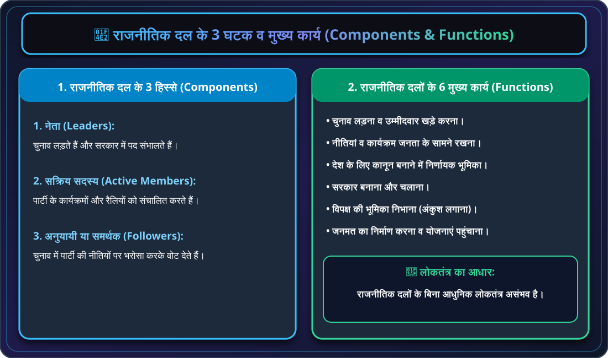
❓ राजनीतिक दलों की आवश्यकता क्यों है? (बिना दलों के लोकतंत्र की कल्पना)
यदि राजनीतिक दल न हों तो क्या होगा? यदि दल न हों तो:
- 1. प्रत्येक उम्मीदवार निर्दलीय होगा: कोई भी प्रत्याशी देशव्यापी नीतिगत वायदे करने की स्थिति में नहीं होगा।
- 2. सरकार की उपयोगिता संदिग्ध रहेगी: चुने हुए प्रतिनिधि केवल अपने निर्वाचन क्षेत्र के प्रति जवाबदेह होंगे, पूरे देश को चलाने वाला कोई नहीं होगा।
- 3. जवाबदेही का अभाव: देश कैसे चले, इसके लिए कोई एक समूह या दल जिम्मेदार नहीं ठहराया जा सकेगा।
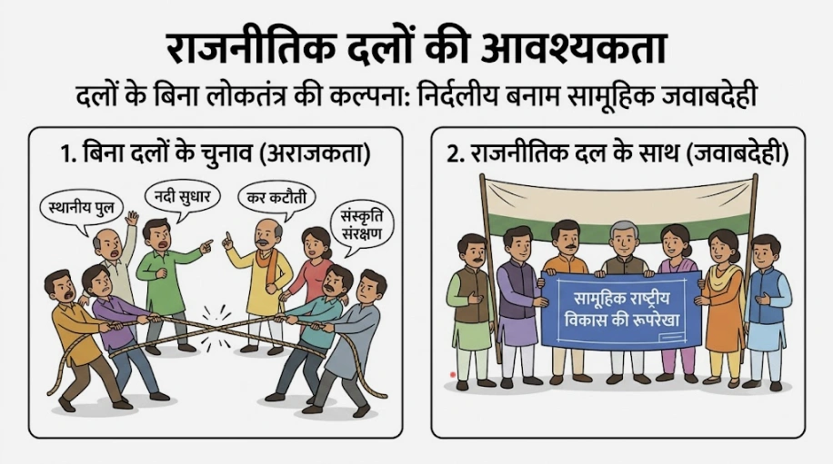
दुनिया भर के लोकतांत्रिक देशों में राजनीतिक दलों की संख्या अलग-अलग होती है। दलीय व्यवस्था को मुख्य रूप से 3 मॉडलों में विभाजित किया जाता है:
| मॉडल प्रकार | विशेषताएं व प्रभाव | उदाहरण देश |
|---|---|---|
| 1. एकदलीय व्यवस्था | केवल एक ही दल को सरकार बनाने और चलाने की अनुमति होती है। यह एक अलोकतांत्रिक विकल्प है क्योंकि इसमें स्वतंत्र चुनावी प्रतिस्पर्धा नहीं होती। | चीन (कम्युनिस्ट पार्टी) |
| 2. द्विदलीय व्यवस्था | मुख्य रूप से दो ही दलों के बीच सत्ता का फेरबदल होता है। सरकार में स्पष्ट बहुमत और राजनीतिक स्थिरता रहती है। | अमेरिका (अमेरिका) & ब्रिटेन (ब्रिटेन) |
| 3. बहुदलीय व्यवस्था | दो से अधिक दल सत्ता में आने की होड़ में होते हैं। अनेक सामाजिक और क्षेत्रीय समूहों को प्रतिनिधित्व मिलता है, परंतु गठबंधन सरकारें बनती हैं। | भारत |
🌐 गठबंधन सरकार एवं मोर्चे
जब बहुदलीय व्यवस्था में किसी एक दल को स्पष्ट बहुमत नहीं मिलता, तो कई दल मिलकर गठबंधन सरकार बनाते हैं। जब चुनाव से पहले ही कई दल मिलकर हाथ मिलाते हैं, तो उसे मोर्चा कहा जाता है। भारत में 2004 के चुनाव में तीन प्रमुख मोर्चे थे:
- 1. एनडीए: राष्ट्रीय जनतांत्रिक गठबंधन
- 2. यूपीए: संयुक्त प्रगतिशील गठबंधन
- 3. वाम मोर्चा: वामपंथी दलों का समूह
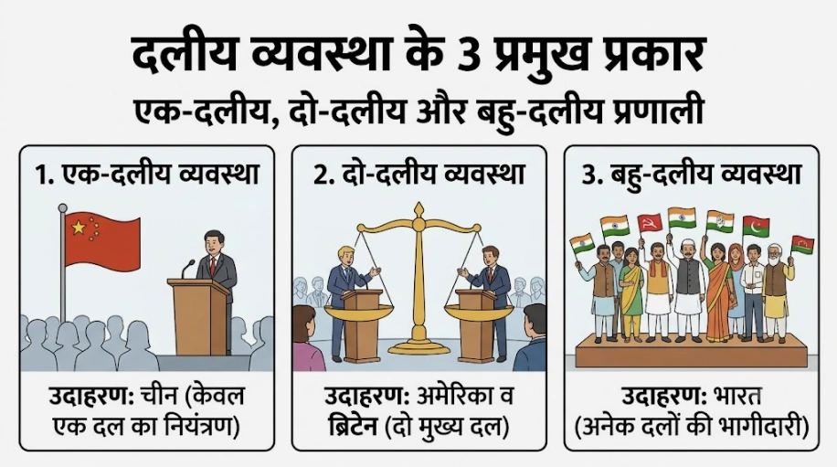

भारत में बहुदलीय व्यवस्था के तहत 750 से अधिक दल निर्वाचन आयोग में पंजीकृत हैं। चुनाव आयोग सभी दलों को समान मानता है, परंतु बड़े और स्थापित दलों को कुछ विशेष सुविधाएं प्रदान करता है जैसे- विशेष चुनाव चिह्न। ऐसे दलों को मान्यता प्राप्त दल कहा जाता है।
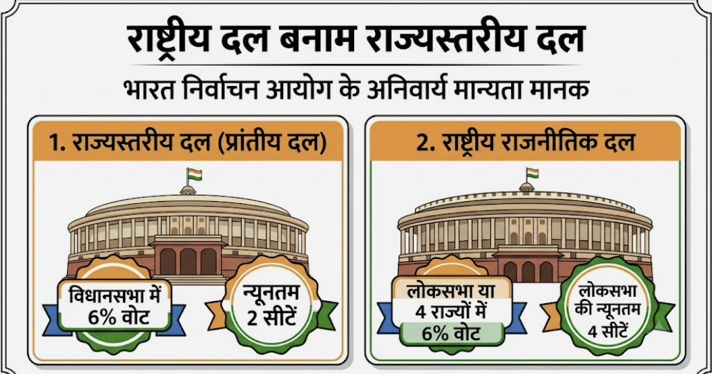
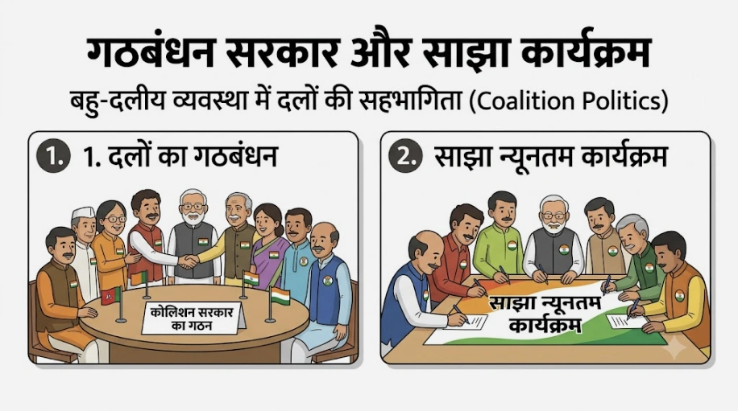

🌾 क्षेत्रीय दलों का उभार एवं भारतीय संघवाद का सशक्तीकरण
पिछले तीन दशकों में भारत में क्षेत्रीय दलों की संख्या और प्रभाव में भारी वृद्धि हुई है। इससे हमारी संसद राजनीतिक रूप से अधिक विविध हो गई है। 2014 तक किसी भी एक राष्ट्रीय दल को लोकसभा में स्पष्ट बहुमत नहीं मिला था, जिससे प्रत्येक राष्ट्रीय दल को क्षेत्रीय दलों के साथ गठबंधन करने पर मजबूर होना पड़ा। इससे भारतीय संघवाद और लोकतंत्र मजबूत हुआ है।
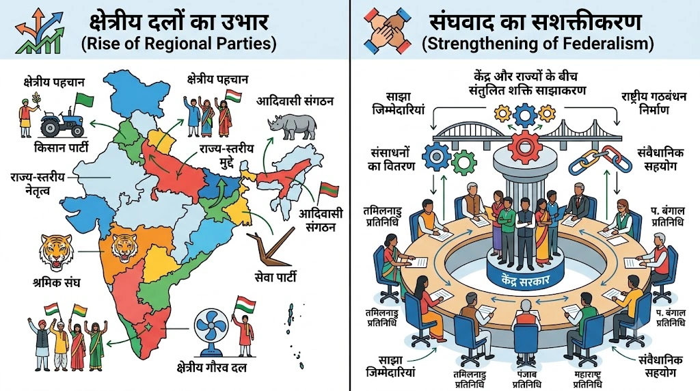
चूंकि राजनीतिक दल लोकतंत्र का सबसे महत्वपूर्ण चेहरा हैं, इसलिए लोकतंत्र के कामकाज की कमियों के लिए जनता राजनीतिक दलों को ही दोषी मानती है। दुनिया भर में राजनीतिक दलों को 4 प्रमुख चुनौतियों का सामना करना पड़ रहा है:
⚠️ चुनौती 1: आंतरिक लोकतंत्र का अभाव
दलों में सारी शक्ति कुछ शीर्ष नेताओं के हाथों में सिमट कर रह जाती है। समस्याएं:
- दलों के अंदर नियमित संगठनात्मक चुनाव नहीं होते।
- दलों के पास अपने सदस्यों की कोई सूची/रजिस्टर नहीं होता।
- आम कार्यकर्ता को पार्टी के अंदर निर्णय प्रक्रिया की कोई जानकारी नहीं मिलती और न ही वह शीर्ष पद तक पहुँच पाता है।
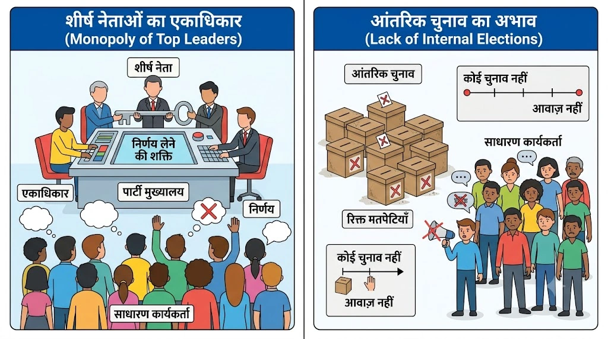
⚠️ चुनौती 2: वंशवाद की चुनौती
चूंकि दलों में पारदर्शी चुनाव और आंतरिक लोकतंत्र नहीं होता, इसलिए शीर्ष पदों पर बैठे लोग अपने ही परिवार के सदस्यों को आगे बढ़ाते हैं। नुकसान:
- अनुभवहीन और अयोग्य लोग केवल परिवार के नाम पर बड़े पदों पर पहुँच जाते हैं।
- दलों में वर्षों से ईमानदारी से काम कर रहे योग्य कार्यकर्ताओं का हक मारा जाता है।
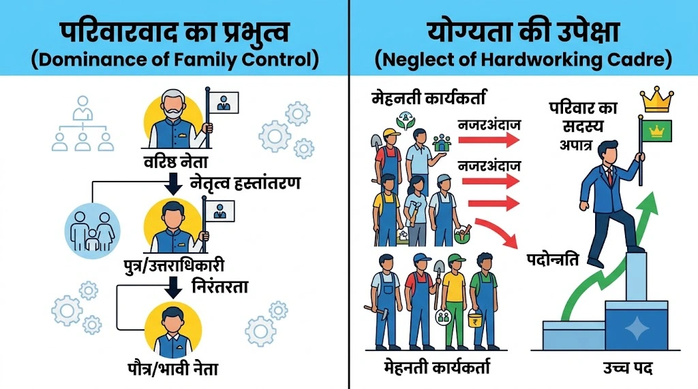
⚠️ चुनौती 3: धन और बाहुबल का प्रभाव
चुनाव जीतने की होड़ में दल किसी भी हद तक जाने को तैयार रहते हैं। परिणाम:
- दल केवल उन्हीं लोगों को टिकट देते हैं जिनके पास भरपूर पैसा हो।
- कई बार दल चुनाव जीतने के लिए आपराधिक पृष्ठभूमि वाले बाहुबलियों को टिकट दे देते हैं।
- बड़ी-बड़ी कंपनियां और उद्योगपति चंदा देकर अपनी मनपसंद नीतियां बनवाते हैं।
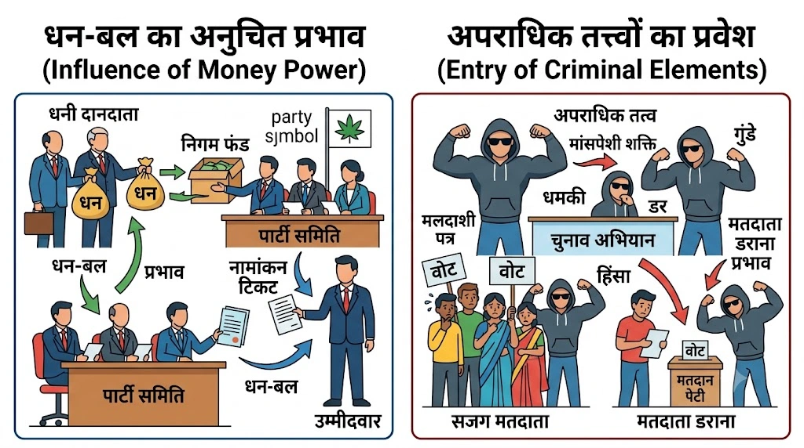
⚠️ चुनौती 4: सार्थक विकल्प की कमी
आजकल विभिन्न राजनीतिक दलों के बीच नीतिगत और वैचारिक अंतर बहुत कम हो गया है। समस्या:
- सभी दल लगभग एक जैसी आर्थिक और सामाजिक नीतियों का समर्थन करते हैं।
- मतदाताओं के पास वास्तविक रूप से भिन्न नीतियां चुनने का कोई विकल्प नहीं बचता।
- यहाँ तक कि नेता भी एक पार्टी छोड़कर दूसरी पार्टी में आते-जाते रहते हैं।
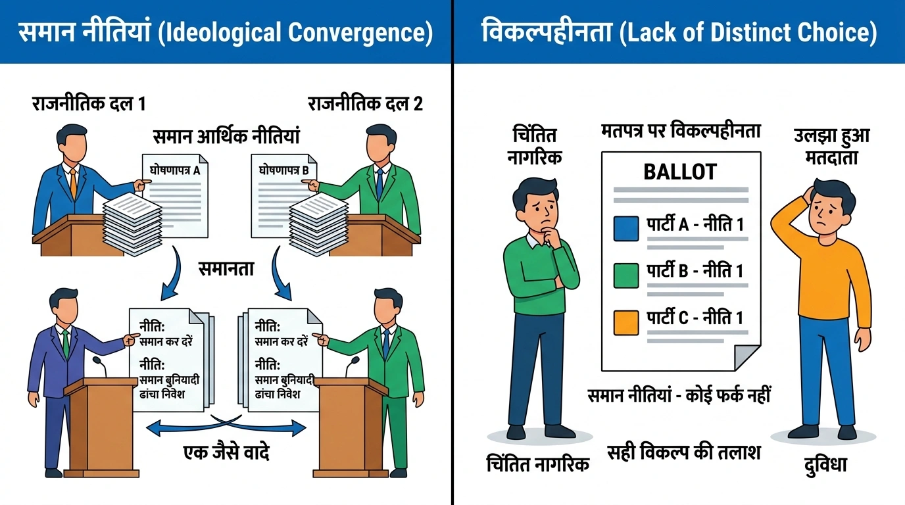

राजनीतिक दलों को इन चुनौतियों से उबारने के लिए भारत में कई संवैधानिक और कानूनी प्रयास किए गए हैं, तथा कई नए सुझाव भी दिए गए हैं:
⚖️ 1. हाल में किए गए कानूनी सुधार
- 1. दल-बदल विरोधी कानून: विधायकों और सांसदों को चुनाव जीतने के बाद पैसे या मंत्री पद के लालच में पार्टी बदलने से रोकने हेतु संविधान में संशोधन किया गया। अब यदि कोई विधायक या सांसद पार्टी बदलता है तो उसकी सदन की सदस्यता समाप्त हो जाती है।
- 2. आपराधिक रिकॉर्ड व संपत्ति का हलफनामा: उच्चतम न्यायालय के आदेशानुसार चुनाव लड़ने वाले प्रत्येक उम्मीदवार को अपनी संपत्ति और अपने खिलाफ लंबित आपराधिक मामलों का एक कानूनी हलफनामा देना अनिवार्य कर दिया गया है।
- 3. सांगठनिक चुनाव व आयकर ऑडिट: निर्वाचन आयोग ने एक आदेश के जरिए सभी दलों के लिए नियमित सांगठनिक चुनाव कराना और अपना आयकर रिटर्न दाखिल करना अनिवार्य कर दिया है।
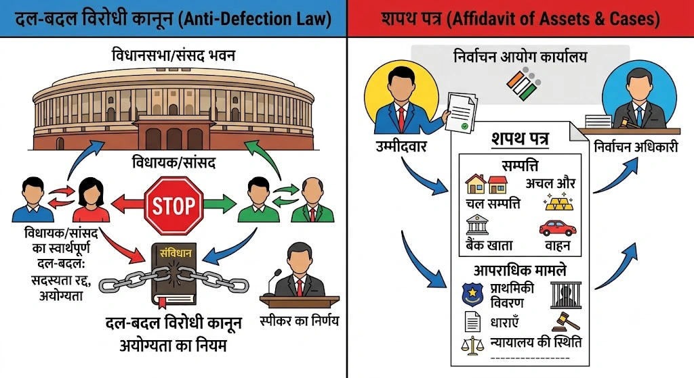
💡 2. सुधार के लिए दिए गए अन्य महत्वपूर्ण सुझाव
- 1. आंतरिक कामकाज का नियमन: दलों के आंतरिक कामकाज को व्यवस्थित करने के लिए कानून बनाया जाए। दलों के लिए अपने सदस्यों का रजिस्टर रखना, विवादों के समाधान हेतु स्वतंत्र पंच बनाना अनिवार्य हो।
- 2. महिला आरक्षण: राजनीतिक दलों के लिए यह अनिवार्य किया जाए कि वे चुनाव में कम से कम एक-तिहाई टिकट महिलाओं को दें।
- 3. चुनाव का सरकारी खर्च: चुनाव का खर्च सरकार को उठाना चाहिए। सरकार दलों को चुनाव लड़ने के लिए पेट्रोल, कागज, फोन आदि की मद में या पिछले चुनाव के वोटों के आधार पर वित्तीय सहायता दे।

👥 3. आम नागरिकों और जन-आंदोलनों की भूमिका
कानून बनाने के अलावा राजनीतिक दलों में सुधार के दो अन्य रास्ते भी हैं:
- 1. जनता का दबाव: आम नागरिक, मीडिया, दबाव समूह और जन-आंदोलन याचिकाओं और प्रचार के जरिए दलों पर सुधार का दबाव बना सकते हैं। जब दलों को लगेगा कि सुधार न करने से उनका वोट बैंक खिसक जाएगा, तो वे खुद सुधरेंगे।
- 2. सक्रिय सहभागिता: केवल बाहर से आलोचना करने के बजाय सुधार चाहने वाले लोगों को स्वयं राजनीतिक दलों में शामिल होना चाहिए। खराब राजनीति का इलाज है- अधिक और बेहतर राजनीति!
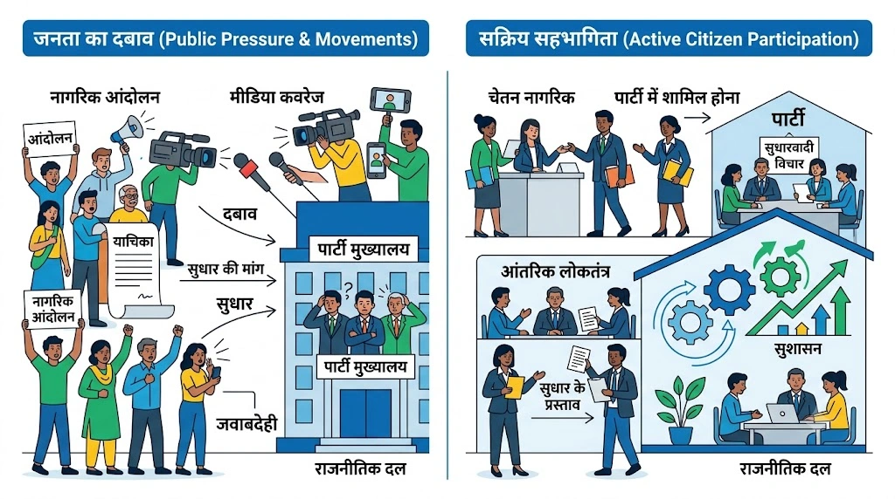